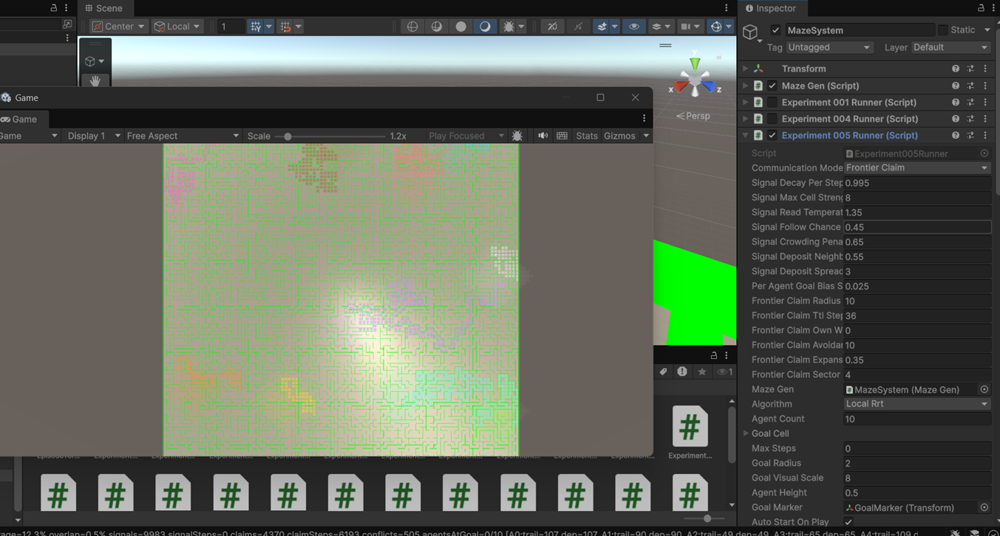
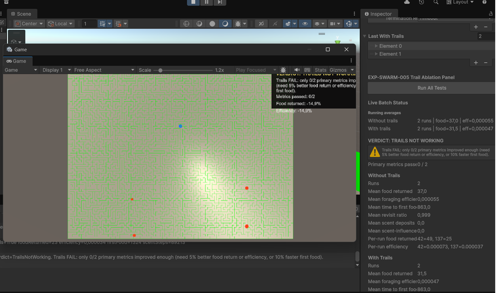

EXP-005 — Frontier Claim Visual Observation
Research question: Does FrontierClaim mode produce visibly distinct, slowly expanding exploration territories for multiple agents in the same maze?
Screenshot — Game view (late episode)

Experiment005Runner, FrontierClaim, 10 agents, LocalRrt (2026-06-20). Source: docs/journal/screenshots/scr2.pngActive runner (from Inspector)
- Runner:
Experiment005Runner(enabled on MazeSystem) - Communication mode:
FrontierClaim - Algorithm:
LocalRrt - Agents: 10 · maze: 28×28
Configuration highlights
| Parameter | Value |
|---|---|
| Frontier claim radius | 10 cells |
| Frontier claim TTL | 36 steps |
| Claim avoidance weight | 10 |
| Claim expansion weight | 0.35 |
| Signal decay per step | 0.995 |
| Signal follow chance | 0.45 |
| Signal crowding penalty | 0.65 |
Metrics
None recorded. This session was evaluated by watching Play mode in real time. Live HUD counters (frontier conflicts, per-agent claim/trail hints) were visible but not saved. Formal logging via Experiment005MetricsLogger was not used for this observation run.
Visual observations
- Agents explore slowly, extending color-coded trails into unexplored corridors.
- Each agent uses a distinct color (cyan, magenta, yellow, orange, etc.) so territories are easy to track on the maze floor.
- Regions grow outward from stratified starts rather than collapsing into one local cluster.
- Some overlap at junctions and non-zero frontier conflicts — expected when claim radii meet in narrow passages.
- Goal marker visible near maze centre; this was a spread-dynamics check, not a timed success run.
Interpretation
FrontierClaim produces readable territorial expansion worth measuring next. The screenshot does not prove coordination benefit over EXP-004 or other EXP-005 modes without seeded CSV comparison.
Full markdown report
· Protocol: docs/experiment_005_multi_agent_signals.md
EXP-SWARM-005 — Scent Trail Ablation
Research question: Do decaying scent trails improve foraging vs the same swarm without trails?
Screenshot — Inspector verdict panel

docs/journal/screenshots/scr1.pngProtocol
- Harness:
ExperimentSwarmTrailAblationHarness - Runner:
ExperimentSwarm004Runner - Seeds: 42, 137 — each with and without trails (4 runs)
- Agents: 96 · max steps: 7000 · food target: 120
Results — without trails
| Metric | Value |
|---|---|
| Runs | 2 |
| Mean food returned | 37.0 / 120 |
| Mean foraging efficiency | 0.000055 |
| Mean time to first food | 863 steps |
| Mean revisit ratio | 0.999 |
| Per-run food | seed 42 = 49, seed 137 = 25 |
Results — with trails
| Metric | Value |
|---|---|
| Runs | 2 |
| Mean food returned | 31.5 / 120 |
| Mean foraging efficiency | 0.000047 |
| Scent activity | deposits & scent steps > 0 |
Deltas (with vs without)
| Metric | Change |
|---|---|
| Food returned | −14.9% (worse) |
| Foraging efficiency | −14.5% (worse) |
Interpretation
Scent trails were active but reduced food collection under the current rules. Likely causes: return-path deposits steer searchers toward the hive; scent weight too high; revisit ratio already ~0.999 without improvement. Only two seeds — treat as a first gate, not a final claim.
Decision gate
Decision: Iterate EXP-SWARM-005. Do not advance to EXP-SWARM-006 yet.
Full markdown report
· Git: f2c668a